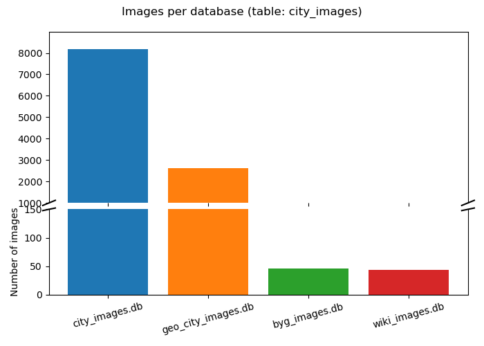

1 Data Report - TravelHunters Project
This document describes all data used in the TravelHunters project and ensures traceability and reproducibility of results.
The TravelHunters project collects and processes travel data from various sources to create a comprehensive dataset for hotels, activities, and destinations. Data is collected through web scraping, cleaned, and stored in a structured database.
1.1 Raw Data
1.1.1 Overview of Raw Datasets
| Name | Source | Storage Location |
|---|---|---|
| Booking.com Hotels | Booking.com via Scrapy Spider | data_acquisition/json_final/booking_worldwide.json |
| Activities Data | GetYourGuide via Scrapy Spider | data_acquisition/json_final/activities_worldwide.json |
| Destinations Data | Tourism Websites via Scrapy Spider | data_acquisition/json_final/destinations_worldwide.json |
| Accommodations Data | Various Sources (Hostelworld, Airbnb) | data_acquisition/json_final/hotels.json |
| Google Maps Street View | Street View Images via Google API | onedrive |
| DuckDuckGo City Images | Images of Cities via DDG_search | onedrive |
| Wikipedia City Images | Wikipedia pages of cities | data_acquisition/json_final/wikipedia_images.json |
| GetYourGuide City Images | GetYourGuide Explorer Pages | data_acquisition/json_final/images.txt |
1.1.1.1 Booking.com Hotels Dataset
- Description: Hotel data from Booking.com, including names, ratings, prices, locations, and image URLs.
- Data Source: Booking.com website via Scrapy Spider (
scraping_data_files/spiders/booking.py). - Data Acquisition: Automated web scraping with pagination for worldwide coverage.
- Legal Aspects: Publicly available data, respecting robots.txt.
- Data Classification: Public business data.
- Variables:
- Hotel name
- Rating
- Price
- Location
- Image URLs
- Description
1.1.1.2 Activities Dataset
- Description: Activities and tours from GetYourGuide, including prices, ratings, and locations.
- Data Source: GetYourGuide website via Scrapy(
scraping_data_files/spiders/activities.py). - Data Acquisition: Web scraping with pagination for various destinations.
- Data Classification: Public business data.
- Variables:
- Activity title
- Price
- Rating
- Locationz
- Image URLs
- Source
1.1.2 Details of Image Datasets
1.1.2.1 GetYourGuide City Images
- Description: Images of cities and activities scraped from GetYourGuide Explorer pages.
- Data Source: GetYourGuide website via Selenium (
scraping_data_files/spiders/selescrape_img.py). - Storage Location:
data_acquisition/json_final/images.txt - Variables:
- City name
- Image URL
- Activity link
1.1.2.2 DuckDuckGo City Images
- Description: Images of cities retrieved using DuckDuckGo search.
- Data Source: DuckDuckGo API (
scraping_data_files/spiders/cityImageScraper.py). - Storage Location:
onedrive - Variables:
- City name
- Image URL
1.1.2.3 Google Maps Street View Images
- Description: Street View images of hotels and destinations.
- Data Source: Google Maps API (
scraping_data_files/spiders/googlescraping.py). - Storage Location:
onedrive - Variables:
- Latitude
- Longitude
- Image URL
1.1.2.4 Wikipedia City Images
- Description: Main images from Wikipedia pages of cities.
- Data Source: Wikipedia pages via Scrapy Spider (
scraping_data_files/spiders/wikipedia_destination_scraper.py). - Storage Location:
data_acquisition/json_final/wikipedia_images.json - Variables:
- City name
- Image URL
- Description
- Coordinates
1.2 Processed Data
1.2.1 Overview of Processed Datasets
| Name | Source | Storage Location |
|---|---|---|
| Merged Travel Data | Consolidation of all raw data | data_acquisition/merged_travel_data.json |
| TravelHunters Database | Cleaned and structured data | database/travelhunters.db |
1.2.2 Details of Processed Datasets
1.2.2.1 Merged Travel Data
- Description: Consolidated and cleaned data from all sources in a uniform format.
- Processing Steps:
- Data loading from JSON files.
- Validation and cleaning (URL validation, duplicate removal).
- Data format normalization.
- Consolidation into SQLite database.
- Access: Via
data_cleaning_and_db_integration.pyscript. - Statistics:
- />2,000 hotels from Booking.com.
- ~90 activities from GetYourGuide.
- ~671 destinations.
- Total: >2,700 records.
- Cities Used: 129 unique cities.
1.2.3 Database structures
1.2.3.1 Travelhunters.db
The following Tables are contained within the Travelhunters.db each representing information for the denoted fields
Cities Table
| ID | Name | Latitude | longitude |
|---|---|---|---|
| 25 | Chicago | 41.875 | -87.624 |
Hotel Table
| ID | Name | Link | Rating | Price | Location | Description | Image_url | Latitude | Longitude |
|---|---|---|---|---|---|---|---|---|---|
| 70 | Hotel Elide | Link | 7.6 | 191 | Central Station, Rome | Description | Image URL | 41.9023 | 12.4940 |
1.2.3.2 Image Databases
Four databases for each dataset of images (Wikipedia, Getyourguide, Duckduckgo, Google Street view Images). Photos are seperated into seperate databases because Git Large File Storage can only upload single files with size of 2 GB or less. Images are stored into database because each peerson had the same images and because the data was structured for each city allowing us to make a script to create the folder structure to train the model.
- Database Files:
- byg_images.db
- city_images.db
- geo_city_images.db
- wiki_images.db
Each image database follows the same structure below
| ID | filename | extension | file | bytes | width | height | city_id |
|---|---|---|---|---|---|---|---|
| 252 | berlin_north_west.jpg | jpg | BLOB | 9821 | 224 | 224 | 14 |

1.3 Data Quality
1.3.1 Key Metrics
- Completeness: >95% of hotels have names and locations, ~80% have ratings.
- Consistency: Uniform data formats through validation and cleaning.
- Accuracy: Automatic validation of URLs and data formats.
1.4 Conclusion
This report provides a detailed overview of the data used in the TravelHunters project, including raw data sources, processed datasets, and data quality metrics. The structured and validated data serves as the foundation for building intelligent travel recommendation systems.